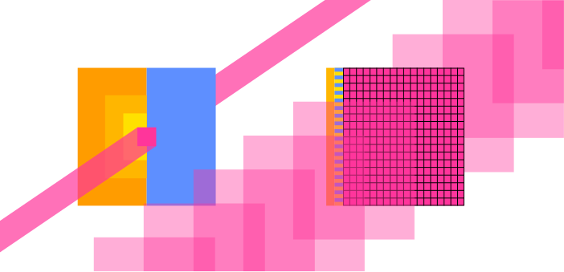

Created , last changed
Colonize computing substrates.
Map, integrate and rebuild the tech stack to be reflective of the universe.
Extract principles, the self in the universe and the universe in the self.
Towards Computation
Direction
From top down:
- How does AI work? Andrej Karpathy
- tinygrad seems to build a beautiful, integrated tool to build AI. To help build it, deep knowledge of computers seems helpful (Optimizing abstration layers and performance)
- How do computers work on a high level? Nand to Tetris
- How would I use CPUs and GPUs for AI without tinygrad? Programming massviely parallel computers (4th edition, Wen-mei W. Hwu, David B. Kirk, Izzat El Hajj)
- How do electronics work? The Art of Electronics and Learning the Art of Electronics
- How is silicon refined, crystallized, doped and etched?
- How does this compare to other computing substrates? Brain, optical and quantum computing?
Rebuild from bottom up!
More refined
Less refined
Mechanisms that can control propagation of a signal depending on their state and that can change their state depending on another signal can be used for computers. = they can be built to take on any function.
Define and build functions that expand the spirits.
Spirits themselves resemble such functions. Bacteria, plants, brains, humans, computers, companies, countries, ecosystems.
They can choose to merge/become coherent.
Software is most flexible, can adapt to other substrates.
Computing substrates are unified under hardware description languages, which define connections between given substrate-dependent logical units to form other desirable functions.
Implementation is expensive, so most hardware is general: provides basic functions that are controlled by series of instructions stored in memory.
Presumably, preinstalled programs (operating systems?) allow humans to write and execute new programs through keyboard, mouse, monitor.
Programming languages help humans state their wishes in terms of those instructions. All higher languages must eventually be compiled to machine code.
Hardware implementation
Signal propagation speeds: Flowing water ~ tens of m/s. Soundwaves in solids ~ thousands of m/s. Electromagnetic signals approach the speed of light ~300,000,000 m/s. Quantum entanglement allows instant transmission of information? Synapses/Axons?
Electronics
They went outside and found that two groups of stuff attract each other but repel members of the same group and still nobody knows why. charges.
If I wiggle a charge, it takes some time for charges nearby to react. As if a signal travelling at 300,000,000 m/s lets them know.
Some materials only display charge behavior after being rubbed together.
When some materials touch some charged materials, the charge appears to spread into the new material als observed by a weaker attraction/repulsion to other charges.
Some materials permit such flow of charge more easily than others, are roughly divided into insulators and conductors.
Magnets? Induce flow?
Only electrons can move?
How are these ideas embedded today?
In some substrates, there are electrons loosely bound to their atom cores. They are not part of a bond and are presumably far away from the core.
If there is an electron surplus on one side and an electron deficit on the other, they will drift in the direction of the deficit.
More loose electrons = better conductor?
Resistors, sometimes made from both conductors and insulators impede flow by forcing barriers into the path. Energy is converted to heat.
In a silicon crystal, electrons are can leave or join an atom core with similar energy. This means the crystal can be bombarded with two types of atoms in different places, one will provide an extra electron when it enters the crystal (n-type) and the other will want an electron from the silicon (p-type). Both doped regions will gain conductance while remaining electrically neutral. Pure silicon crystal can be used as a weak insulator/resistor.
Bombarded silicon crystals are damaged, but will repair when heated. About 1 in 1000 atoms in the lattice is swapped, lest the crystal fragments (?).
If more electrons are added to the side of free floating electrons (n) and a deficit connected to the other side (p). The side which lacks electrons will lack even more and the side that has them will have even more and quickly the pressure becomes large enough for electrons to flow through the gap.
In the other direction, electrons will first fill the electron holes and on the other side they will be sucked out, effectively eliminating charge carries and widening the non-conductive gap (depletion zone). Only if a relatively large voltage is applied, do electrons flow again.
Transistors can be built from an n-p-n arrangement (or p-n-p) with an insulator and a capacitor above the p region. When the capacitor is charged, it sucks electrons into the region, first filling electronholes, then adding free floating electrons allowing free flow to the n-regions: Gate is open. Higher current means the gate capacitor charges faster or higher, opening the channel sooner. Enables faster switching speeds at the cost of power, which rises at current squared.
(FinFETs solve problems from small scale somehow to get smaller)
Sand is filtered by size, weight (and?) to extract most pure silicon, which is molten and a crystal is drawn from it.
Slices of pure silicon crystal (wafers, 15-30cm diameter, 0.2mm thick) are partially masked (with what), bombarded with Bor/Phosphor to create n-p-n regions. Repeated for the other element. Heated to repair the crystal.
Coated with a thin film, which is weakened by UV light shining through a mask. Weakened film washed away. Etched. Conductor (other elements, insulation?) poured into the etched space. Sanded flat. Build up more layers? Cleaned repeatedly.
Practically 3D printing. Many cycles. 3 months for a any chip to complete (with equipment already in place and running!).
Hardware description language
Depending on the implementation, various basic building blocks may be available. Mechanical adders or square root calculators, transistors.
HDL expresses connections between these. No speak of electrons, but bits, gates, clocks and busses.
Bits is information spread into multiple signals like (1101 = 13), instead of single 13 signal. For flexibility?
Gates are commonly used arrangements. Truth table of all possible gates with two binary inputs:
| x: y: |
0 0 |
0 1 |
1 0 |
1 1 |
|---|---|---|---|---|
| constant 0 | 0 | 0 | 0 | 0 |
| And | 0 | 0 | 0 | 1 |
| x And Not y | 0 | 0 | 1 | 0 |
| x | 0 | 0 | 1 | 1 |
| Not x And y | 0 | 1 | 0 | 0 |
| y | 0 | 1 | 0 | 1 |
| Xor | 0 | 1 | 1 | 0 |
| Or | 0 | 1 | 1 | 1 |
| Nor | 1 | 0 | 0 | 0 |
| Equivalence | 1 | 0 | 0 | 1 |
| Not y | 1 | 0 | 1 | 0 |
| If y then x | 1 | 0 | 1 | 1 |
| Not x | 1 | 1 | 0 | 0 |
| If x then y | 1 | 1 | 0 | 1 |
| Nand | 1 | 1 | 1 | 0 |
| Constant 1 | 1 | 1 | 1 | 1 |
FPGAs? Buy and use one?
Signal propgation takes some time until the output stabilizies (adding 15 and 17 might initally output 22 before carrying over 1 and stabilizing at 32). Clocks exist to fetch the data only when it is expected to have stabilized. They periodically change their output between 0 and 1. Storage will only accept input if the clock is on a 1 cycle. The clock is timed such that any calculation can stabilize during the 0 cycle. They also help synchronized processes. Desktop consumer processors today reach 5 GHz clockrates.

Latency-oriented vs throughput-orientied processors.
Latency is reduced through:
- large on-chip caches (L1, L2, L3 = yellow) for faster data access
- large control units (blue) for better utilization
- higher clockrates
each with diminishing returns.
Throughput-oriented processors use the chip area for more processing cores (magenta) at lower clockrates, saving power. The cores require fast, parallel memory access to stay fed.
The Elements of Computing Systems: Building a Modern Computer from First Principles
(second edition - Noam Nisan, Shimon Schocken)
What I hear, I forget; What I see, I remember; What I do, I understand.
—Confucius (551–479 B.C.)
Hardware
- Church-Turing conjecture that all computers are essentially the same. It does not matter which computer is implemented here.
- good modular design -> module are truly independent and can be treated as black boxes by users
- NAND or NOR Gates can implement any computer
1. Boolean Logic
Possible boolean functions for n binary inputs is ${2}^{2^{n}}$. and some have names, like here with two inputs:
Testing complex chip implementation completely is infeasible, so they test on a subset.
CUDA
Data parallelism
data parallelism is a simpler special case of task parallelism, where a task is split up into parallelizable sections. data parallelism already provides data that can be treated independently.
code is being reorganized to be executed around the new data structure
2.2 CUDA C program structure
- framework vs programming model
- framwork provides specific functions, programming model more like a way to think about program and data structure (warps, block, threads)
- kernel (seed) vs function. its a function that is "launched" onto the GPU and executed for each thread
- cuda c extends normal c (ANSI C) with keywords, some new syntax and functions to run stuff on the GPU. all normal c code runs on CPU
- host and device code somehow cooperate. the host launches (kernel) a grid of threads
- cuda threads are sequential programs with a program counter and its variables. (each thread runs the same program but effectively has an id as defined by predefined variables that differ for each thread)
- Generating and scheduling threads on GPU is very fast. Not on CPU. kernels tend to be simple and can just be copied into the threads. context switching is also extremely fast on GPU for latency hiding.
- On CPU what if I open more threads than are available on the CPU? they are switched into the physical threads
2.3 vector addition kernel CPU
- conventional c host code
- declaring pointers is with
float *P;, accessing address of a variable withint *addr = &Vand getting the item at the pointer withfloat V = *P - subsequent statements in the main function can use the output
C - getting ~20 MFLOPS on CPU
- the following code for on-device computation will practically outsource this part, but its inefficient because it will be moving a lot of dta around which is slow.
- it will allocate memory on device and move the arrays there, then run the kernel, then free device vectors
#include <stdio.h>
#include <time.h>
void vecAdd(float* A, float* B, float* C, int n) {
for (int i = 0; i < n; i++) C[i] = A[i] + B[i];
}
int main() {
// initialize vectors
int n = 5;
float A[n] = {1.2, 3.1, 0.7, 1.6, 2.5};
float B[n] = {3.0, 2.7, 0.3, 1.3, 2.2};
float C[n];
// kernel
struct timespec start, end;
clock_gettime(CLOCK_MONOTONIC_RAW, &start);
vecAdd(A, B, C, n);
clock_gettime(CLOCK_MONOTONIC_RAW, &end);
// results
for (int i = 0; i < n; i++) printf("%.2f + %.2f = %.2f\n", A[i], B[i], C[i]);
printf("Wall clock time: %.9fs\n", ((end.tv_sec - start.tv_sec) + (end.tv_nsec - start.tv_nsec) / 1000000000.0));
return 0;
}
2.4 Device global memory and data transfer
- cudaMalloc and cudaFree
- cudaMalloc assigns to the argument pointer (
void **) and returns possible errors. so there is need for the cudaCheck function. - A_h and A_d for host and device
- the vecAdd function that allocates, copies and copies back and frees is called stub for calling a kernel.
- error checking macro
2.5 Kernel functions and threading
- the kernel functions will be written in SPMD style (single program multiple data).
- grid -> block -> thread
- 1 block = 1024 threads max
- threadIdx and blockidx for thread id
- what is ANSI C? CUDA C is an extension of ANSI C
- globa, host and device keywords for kernel functions.
- global kernel function = new grid.
- grid of threads = loop (loop parallelism)
- boundary checking
2.6 Calling kernel functions
- execution configuration parameters
- cannot make assumptions about execution order
- some gpus will work through it in smaller pieces than others
- language needs a compiler. NVCC produces host code (gcc?) and device code (PTX -> binary)
- what is the purpose of just in time compilation?
2.7 Compilation
- needs a different compiler
- to virtual binary files (PTX)
- runtime component of nvcc translates to "real object files" to be executed on GPU. but in the illustration its called "device just-in-time compiler"
fastai diffusion
PART 2: deep learning foundations to stable diffusion 2022
-
have a classification that says how much something corresponds to the target
- add noise to targets and train a neural net to predict what noise was added
-
get gradient for every pixel of the input
- update pixel
Unet: input: some noisy image. output: the noise
Use an autoencoder to reduce image size before training the unet. unet now predicts the noise in the latents (encoded images). use autoencoder's decoder to get high res image again.
AE vs VAE
LABELS
add image label to the input for unet training. Makes it easier for unet to predict noise. Now, I can input label + noise and it starts to find noise that leaves an image equal to my label.
label needs encoding to be non-specific. "beautiful swan", "nice swan", "graceful swan" should return similar images. Training the network on every wording leads to combinatorial explosion.
Instead: train a network to encode images and their labels with a similar vector. Then, since, slight differences in wordings lead to the similar images, the network understands their similarity and can interpolate usefully.
the image vector and its label's vector should be similar. Their vector should be dissimilar to other image or text embedding vectors.
Calculate similarity of two vectors: dot product (= higher if more similar)
loss function (in this case higher = better) = dot product of matching image+label - dot product of non-matching image+label
(= contrastive loss)
models used in this case for image and text encoding : CLIP (contrastive loss IP(?))
network being multimodal: similar embeddings in different modes
model does not know how to improve on a finished image if it turned out wrong. needs to add noise, then redo.
Inbox
changing the world to my needs, this impossibly flexible thing appears that can take any shape that I can define within some performance limtations.
Run an LLM on it and it will speak to me.
why care about implementation?
because it can be optimized and I want to build the next coolest thing, it should reflect the universe, not convention. How does it arise? its a general idea that can be differently implemented
implementations are unified by HDL
Software exists to reuse hardware.
Ugly software everywhere. Google owns me. How to build something better? Something that can be understood and that is mine? Dismante "Oh it's soo complicated, I have to buy into all this crap".
Build myself into the computer = spirit stream.
I answered "What is the spirit stream fundamentally?"
What is the spirit fundamentally? How does it want to instantiate itself? Build a machine that it can trust.
Introspect to find that the spirits are somewhat substrate independent. that my body can be part of the environment and the environment can be part of my body.
Layers of silicon, copper, insulation, doping = transistors + connections = gates
(HDL) Gates + Gates = von Neumann machine. ALU, memory, PC, registers
How to start the computer? Power delivery, BIOS?
Series of instructions come from compiled languages.
How to connect to other computers? Optic fibre cables, antennas, DNS
OS as the platform to build on.
Spirit stream interface
How do neural networks actually running on the hardware? tinygrad
How does the brain connect into this framwork?
Electronics
Learning the Art of Electronics
The Art of Electronics
https://www.tinkercad.com/circuits
Paul Drude model of electricty pretends that electrons are discrete mechanical objects. This works, but really they are quantum particles.
Chips
GPU PCBs are huge but mostly data storage and delivery, power transformation and delivery and other I/O in support of the core. The Voltage Regulator Modules (VRMs) emit notable heat.
Non Founders Edition cards offer more powerful cooling and sometimes electrical robustness and smallness.
Trying to verify ALU percentage on chip area, but ALUs are too small to differentiate easily?
Intel Raptor Lake microarchitecture
Intel Alder lake-S good annotation

H100 die. "squares" are streaming multiprocessors (144). Darker areas between are mostly L3 Cache.
H100 Tensor Core GPU Architecture
Understanding the anatomy of GPUs using Pokémon
Reddit Books for GPU arch
AI
Backpropagation described here:
Andrej Karpathy: Neural networks: Zero to Hero
Wolfram Alpha to look up functions for derivatives.
Linear layers, convolutional neural networks and optimizers
- https://course.fast.ai/
- essential libraries: numpy, matplotlib, pandas, pytorch
- https://huggingface.co/learn/nlp-course/chapter1/1
- sympy: symbolic processing?
- wolfram alpha
- higher level papers by Joscha Bach
- Transformers
- Assembly
- How does long term memory emerge? How is information stored in the brain? LSTMs
A Path Towards Autonomous Machine Intelligence (Yann Lecun)
Model Predictive Control MPC
hierarchical planning - no AI system does this so far except implementing by hand
generative adversarial network GAN
LLM Security threats Promt insertion, jailbreak, data poisoning
Robot:
step motor, brushless motor -> more complicated control (servos?), brushed motor
harmonic reducers, planetary gearboxes
building a robot arm
I should be able to fist bump the robot hard, so it flies back but catches itself.
perceptual loss?